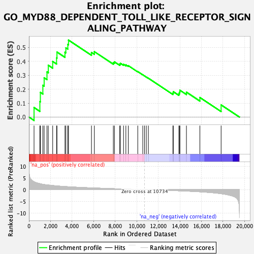

| | | Dataset | PFS |
| Phenotype | NoPhenotypeAvailable |
| Upregulated in class | na_pos |
| GeneSet | GO_MYD88_DEPENDENT_TOLL_LIKE_RECEPTOR_SIGNALING_PATHWAY |
| Enrichment Score (ES) | 0.5521675 |
| Normalized Enrichment Score (NES) | 1.7381915 |
| Nominal p-value | 0.0 |
| FDR q-value | 1.0 |
| FWER p-Value | 1.0 |
Table: GSEA Results Summary

Fig 1: Enrichment plot: GO_MYD88_DEPENDENT_TOLL_LIKE_RECEPTOR_SIGNALING_PATHWAY
Profile of the Running ES Score & Positions of GeneSet Members on the Rank Ordered List
| SYMBOL | RANK IN GENE LIST | RANK METRIC SCORE | RUNNING ES | CORE ENRICHMENT | | 1 | CD300A | 472 | 3.393 | 0.0684 | Yes |
| 2 | IRAK1 | 1013 | 2.568 | 0.1107 | Yes |
| 3 | TLR4 | 1058 | 2.516 | 0.1771 | Yes |
| 4 | TLR7 | 1290 | 2.294 | 0.2279 | Yes |
| 5 | IRF7 | 1410 | 2.196 | 0.2817 | Yes |
| 6 | CD36 | 1672 | 2.040 | 0.3239 | Yes |
| 7 | TLR8 | 1795 | 1.977 | 0.3716 | Yes |
| 8 | TLR1 | 2202 | 1.765 | 0.3989 | Yes |
| 9 | IRAK2 | 2560 | 1.614 | 0.4247 | Yes |
| 10 | TIRAP | 2599 | 1.596 | 0.4663 | Yes |
| 11 | BTK | 3340 | 1.338 | 0.4648 | Yes |
| 12 | REG3G | 3424 | 1.315 | 0.4964 | Yes |
| 13 | IRAK4 | 3606 | 1.259 | 0.5215 | Yes |
| 14 | IRAK3 | 3668 | 1.240 | 0.5522 | Yes |
| 15 | LY96 | 5799 | 0.761 | 0.4636 | No |
| 16 | MYD88 | 6067 | 0.710 | 0.4693 | No |
| 17 | TLR10 | 7828 | 0.416 | 0.3903 | No |
| 18 | MAP3K7 | 7932 | 0.402 | 0.3960 | No |
| 19 | TLR9 | 8418 | 0.332 | 0.3802 | No |
| 20 | TAB2 | 8487 | 0.324 | 0.3855 | No |
| 21 | TLR5 | 8775 | 0.283 | 0.3785 | No |
| 22 | HSPD1 | 8991 | 0.252 | 0.3744 | No |
| 23 | MAP3K1 | 9215 | 0.219 | 0.3689 | No |
| 24 | TLR6 | 10094 | 0.090 | 0.3263 | No |
| 25 | UBB | 10560 | 0.025 | 0.3032 | No |
| 26 | UBC | 10724 | 0.002 | 0.2948 | No |
| 27 | RPS27A | 10887 | -0.021 | 0.2871 | No |
| 28 | CD14 | 11078 | -0.047 | 0.2786 | No |
| 29 | TAB3 | 13354 | -0.401 | 0.1729 | No |
| 30 | IRF1 | 13392 | -0.408 | 0.1821 | No |
| 31 | CD300LF | 13906 | -0.499 | 0.1694 | No |
| 32 | UBA52 | 13980 | -0.512 | 0.1796 | No |
| 33 | TRAF6 | 14004 | -0.517 | 0.1925 | No |
| 34 | TNIP1 | 14609 | -0.631 | 0.1788 | No |
| 35 | TLR2 | 15858 | -0.935 | 0.1403 | No |
| 36 | TAB1 | 17827 | -1.752 | 0.0871 | No |
Table: GSEA details [plain text format]
Fig 2: GO_MYD88_DEPENDENT_TOLL_LIKE_RECEPTOR_SIGNALING_PATHWAY: Random ES distribution
Gene set null distribution of ES for GO_MYD88_DEPENDENT_TOLL_LIKE_RECEPTOR_SIGNALING_PATHWAY